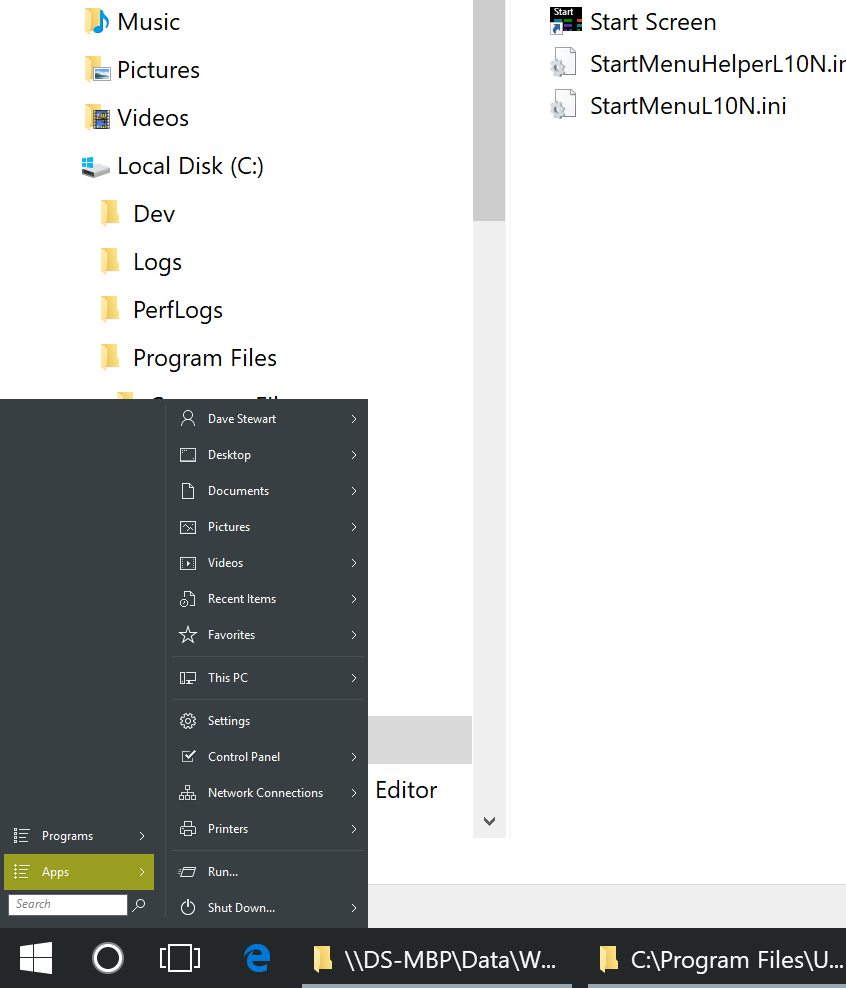

Right click the start button, select settings
type 'dpi' into the searchbox
change 'override system dpi' to whatever numbers fit best
| Classic Shell http://www.classicshell.net/forum/ |
|
| Classic Start Menu too small on high res display http://www.classicshell.net/forum/viewtopic.php?f=7&t=8452 |
Page 1 of 1 |
| Author: | davestewart [ Thu May 24, 2018 3:39 am ] |
| Post subject: | Classic Start Menu too small on high res display |
I'm running classic shell on Parallels on a Mac, and have set VM to retina mode. The rest of Windows runs fine, but Classic Shell start menu is not scaling:  I've played with the checkboxes in the File Explorer Properties panel, but no luck. I've also reset all CS settings, and reverted to the built in skins, but no luck. I am running CS 4.3.1 |
|
| Author: | Jcee [ Thu May 24, 2018 4:34 am ] |
| Post subject: | Re: Classic Start Menu too small on high res display |
Right click the start button, select settings type 'dpi' into the searchbox change 'override system dpi' to whatever numbers fit best |
|
| Author: | davestewart [ Thu May 24, 2018 5:29 am ] |
| Post subject: | Re: Classic Start Menu too small on high res display |
Brilliant! That and icon size, and it looks like it used to. Thanks so much! |
|
| Page 1 of 1 | All times are UTC - 8 hours [ DST ] |
| Powered by phpBB® Forum Software © phpBB Group https://www.phpbb.com/ |
|